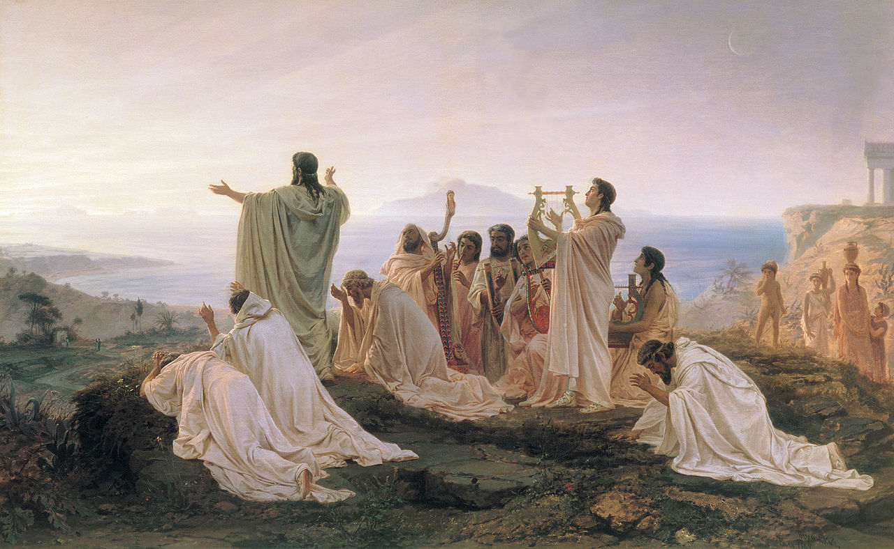
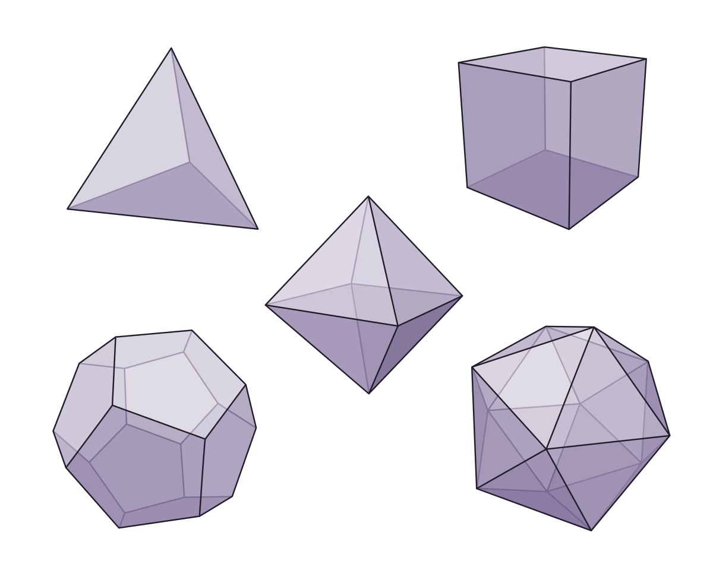

Plato's greatest achievement

Aristocles was born around 425 BC to an aristocratic Athenian family, however, due to his broad chest and shoulders, he adopted a more familiar nickname, Plato (literally meaning “the broad”). Arguably one of, if not the most influential figure in the history of western philosophy, one would be hard-pressed to find a single great thinker who has escaped his influence. But what exactly did Plato contribute to western thought to earn the lofty position he has occupied for the last 2500 years? How different would the world have been today in his absence? Those with an interest in his works may be familiar with his most famous idea, his “theory of forms”, but of context, its fairly abstract nature makes it difficult to not dismiss it as an interesting, but otherwise inconsequential development in the western canon. However, like most great ideas, the magnitude of Plato's achievements can only be truly seen with knowledge of the situation from which they arose, and the problems that they tried to solve. Over the course of this essay, we will look at the problem situation from which Plato's theory of forms arose and use this contextual knowledge to try to understand why he has become one of history's most revered figures.
Many questions have occupied the minds of history's greatest thinkers. One of the oldest and simplest of these is the following: what is the fundamental nature of reality? Our story begins with this question and in the southern Italian city-state of Croton in the year 530 BC. Croton was the birthplace of the Pythagorean school, whose eponymous founder and his famous theorem we are all familiar with (whether fondly or with frustration) from our secondary maths education. The Pythagoreans were an almost cult-like group who lived a communal, ascetic lifestyle and held a religious reverence for numbers. They believed that, in the literal sense, the very structure of the world was numbers and through this view, all that is good and beautiful in the world could be explained. The two ideas in particular that contributed to the justification of the Pythagorean worldview were the existence of musical harmonies based on numerical ratios (1:2, 2:3, 3:4, etc) and the existence of Pythagorean triples. These were the whole number solutions to Pythagoras' famous theorem (the smallest of these is 3, 4, 5 since 3² + 4² = 5²). Another belief held by this group, one that they believed explained the beauty and comprehensibility of the world, was that all numbers are rational, that is they can be written in the form a/b, where a and b are both whole numbers. This is a fact that we know today to be false, but legend has it that the proof of this fact was a closely guarded secret amongst the upper ranks of the school and that the member who gave away this secret was killed for his treachery. How a fact about numbers could motivate rational people to resort to murder seems ludicrous from our modern perspective, but this is a crucial development in our story that we shall return to later.
The next group of interest to our question is the Eleatic school, founded in the fifth century BC and two of its members: Parmenides and Democritus. The fundamental problem that concerned the members of the Eleatic school was the paradox of change. While it has many different formulations, it can be summarised briefly as follows: if a thing X changes, it is no longer X, but to say one thing X has changed, it must have, in some capacity persisted through the change, that is it must be the same thing X before and after the change. This entails our paradox. To say that this problem is abstract and far too metaphysical to be of concern to most of us is a fair assessment, but it has nevertheless plagued the minds of philosophers since antiquity. Contradictions, however esoteric, have often proved to be the most fertile ground for the development of our understanding of the world, and have on numerous occasions led to ideas that have had surprising ramifications outside of the parochial circumstances in which they were conceived. The paradox of change is not an exception to this rule. In response to this problem, Parmenides concluded that since change produces a contradiction, there cannot in reality be any change in the world. His line of reasoning can be summarised as follows:
- Only what is, is.
- What is not does not exist.
- Non, being, or the void, does not exist.
- The world is full.
- The world has no parts, it is one block.
- Motion is impossible as there is no empty space to move into.
6'. There is motion.
5'. The world has parts.
4'. Thus, the world cannot be full.
3'. The void exists.
Democritus concluded that the world is, in reality, a void populated by small indivisible elements he called atoms. Thus, from the paradox of change and the subsequent refutation of Parmenides's solution, sprung the first atomic theory of the universe, whose influence on modern scientific thought is, I believe, self-evident.
At this point in our story, we have two theories that, for the people at the time, represented the forefront of their understanding of the world: Pythagoreanism and Atomism. The key point that both these theories hold in common is the discretisation of time and space, that is that there is a smallest length and time interval and that all phenomena are constructed from a finite, and more importantly, integer number of these. Thus both of these theories are what we shall refer to as arithmetic worldviews, whose key property is this countability of the constituents of reality. Together, these two models of the world allowed the ancients to answer many of the questions they had regarding the properties and behaviour of physical matter as well as more metaphysical concerns like truth and beauty, but this perceived explanatory power would not last for long. The fatal blow to both of these theories came from an idea that we have already mentioned: irrational numbers.
An irrational number is simply one that cannot be written in the form a/b. You can quite easily conceive of an arbitrarily accurate approximation (simply the first n digits divided by the corresponding power of 10) but no matter how accurate, these will never be exactly equal. The most well-known examples of this class of numbers are √2, and √3, but the one that was of particular interest to the Pythagoreans was √2, as this is the length of the diagonal of a unit square (that is a square with a side length of one) and thus was a number they became aware of fairly early. I won't outline in too much detail the proof of the irrationality of √2, but the simplest one essentially consists of the following steps: First, we assume √2 can be written as a/b. In its simplest form, no more than one of these numbers can be even, as if they both were it would not be in its simplest form. Starting from this assumption and performing some algebra, we in fact conclude that both a and b are even. Since this isn't possible, and a false conclusion cannot be deduced from a true premise, our initial assumption must be false, that is that can be written as a/b. This is a fact that does not perturb modern mathematicians, or even students, in the slightest, but the damage this did to both of these theories cannot be understated, and even eventually lead to the decline of the Pythagorean school from a position of considerable influence.

While many doubted the validity of this proof, still wishing to cling to the old ideas, the spread of irrational numbers did not encounter much resistance outside of the Pythagorean school and quickly became the dominant position. However, Plato was possibly the first person to realise the full significance of this discovery, specifically how it would come to undermine the fundamental tenets of Pythagoreanism whose teachings he was quite familiar with. It was in this context that he set out to develop a new metaphysical theory that would be able to succeed where the old one had failed. This pursuit culminated in his “theory of forms”. While I obviously cannot do justice to the full depth and complexity of this idea in such a brief essay, I will try to summarise its key ideas as faithfully as possible. To Plato, the physical world was an imperfect copy of the world of absolute, unchanging ideas which he called “forms”. While we are all familiar with the concept of abstract ideas, he believed these to be just as, if not more real than the imperfect instantiations of them in the physical world (To anyone familiar with object-oriented programming, the analogy here is that forms behave like classes). For example, a perfect circle can never exist in reality, every drawing will have atomic-sized deviations at best and can never truly be 2D. The perfect form of a circle exists independently from us in the world of forms. Likewise, we can never find a perfect rose, for it will always be at some stage in its life, germinating, budding, decaying, the perfect form of the rose is inaccessible to us. This concept is also extended to abstract concepts like truth, beauty, and justice. Every object or quality has a corresponding absolute, unchanging form.
Central to this theory was the forms of the platonic solids, a collection of 3D shapes which Plato believed, were the constituents of all matter, with each embodying certain properties that the matter then inherited. The crucial development made by Plato here was that some of these shapes had side lengths of √2 and √3, thus positing irrational numbers are fundamental to the very structure of reality as opposed to the inconvenient anomaly there were in the Pythagorean worldview. While this is certainly an interesting idea, the relevance of such a development on the structure of modern thought still seems fairly far removed. However, as I will attempt to outline below, the philosophical leaps that Plato and his predecessors made all those years ago paved the way for the scientific theories that now make up our model of reality.
The achievements of the Platonic worldview are twofold, both equally staggering in magnitude. The first was the birth of the geometric worldview. We may take for granted today that reality can be modelled geometrically, but from the perspective of our predecessors, it is not an obvious way to try to understand the world. Most of the mathematical knowledge that was, and still is, relevant to us is simple numeracy, that is the counting of discrete objects. History seems to agree with our intuition here as the Pythagorean worldview predated the Platonic by over 100 years. Given the fact that an arithmetical model of reality seems to be so self-evidently fundamental, to be the first to make the jump to a geometric one can only be described as an act of genius. The echoes of Plato's genius can be seen all around us today as the direct inspiration for the geometric models of Copernicus, Galileo, Kepler, Newton, and Einstein. While each of these men was a once in a generation genius in their own right, they, like all of us, stood on the shoulders of giants, and none provided a more solid foundation than the shoulders of 'the broad'. If not for Plato's achievements, our understanding of the world and the sophistication of the models that we use to describe it would be greatly diminished.
The second great philosophical leap is closely tied to the first, and that is the idea of explaining the visible world by a postulated invisible world. While this idea in itself was nothing new, being a staple of all of history's theologian traditions, Plato and his predecessors were the first to approach it from a secular perspective. The unseen world did not need to be some unknowable seat of the Gods or a mystical undercurrent that we can only attain knowledge of by the intuition of priests and scholars but has a universal structure, that through experimentation and rational debate can be revealed by anyone. In short, the philosophers of antiquity invented a new approach towards the world and the knowledge of the world: the rationalistic tradition. The knowledge gained by the adoption of this tradition has taken us far beyond our humble origins and assuming it persists, will hopefully carry us far beyond the tiny corner of the universe that we currently call home.
While philosophy is often characterised in the public eye as elitist circles of professors debating the minutia of esoteric terminologies, this is not the spirit in which it began, nor the one in which it should continue. Intellectual gatekeeping only serves to boost the ego of academics and stagnate the continual development of ideas needed to face the challenges of an ever-changing world. The purpose of philosophy is to answer real philosophical problems, to help us cope with the uncertainty of existence without being paralysed into indecision. The great philosophers of history were not dealing with pseudo-problems concocted within their fields, they had no choice but to pursue philosophy to answer the pressing problems of their time. This sentiment can be summed up perfectly by the following quote from the great Karl Popper.
Most of the ideas in this essay are from Karl popper's 'conjectures and refutations', a book I would highly recommend to anyone further interested in the topics discussed or the philosophy of science in general.“Genuine philosophical problems are always rooted in urgent problems outside philosophy, and they die if these roots decay”